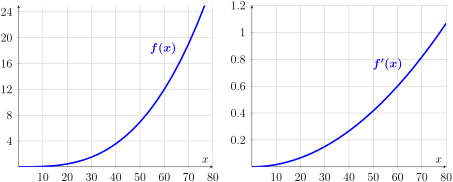
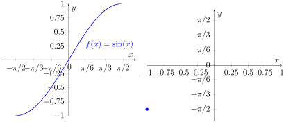
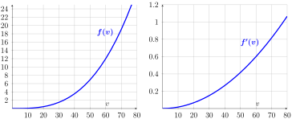

Let \(f^{-1}\) be the inverse function of \(f\text{.}\) The relationship between a function and its inverse can be expressed with the identity
\begin{equation*}
f(f^{-1}(x))=x.
\end{equation*}
Activity2.8.1.
In this activity you will use implicit differentiation and the inverse function identity in Remark 2.8.1 to find the derivative of \(y = \ln(x)\text{.}\)
(a)
Suppose that \(y=\ln(x)\text{.}\) Then we have that
\begin{equation*}
e^y = x .
\end{equation*}
Using implicit implicit differentiation, what do you get?
\(\displaystyle \frac{dy}{dx} = \frac{x}{y}\)
\(\displaystyle \frac{dy}{dx} = \frac{1}{e^x}\)
\(\displaystyle \frac{dy}{dx} = \frac{x}{e^y}\)
\(\displaystyle \frac{dy}{dx} = \frac{1}{e^y}\)
(b)
Notice that we started with the relationship \(e^y=x\text{.}\) Use this to simplify \(\frac{dy}{dx}\text{.}\) You should get that when \(y=\ln(x)\) we have that \(\frac{dy}{dx} = \frac{1}{x}\text{...}\) as expected!
Activity2.8.2.
In this activity we will try to find a general formula for the derivative of the inverse function. Let \(g\) be the inverse function of \(f\text{.}\) We have also used the notation \(f^{-1}\) before, but for the purpose of this problem, let us use \(g\) to avoid too many exponents. We can express the relationship “\(g\) is the inverse of \(f\)” with the equation from Remark 2.8.1
\begin{equation*}
f(g(x))=x.
\end{equation*}
(a)
Looking at the equation \(f(g(x))=x\text{,}\) what is the derivative with respect to \(x\) of the right hand side of the equation?
\(\displaystyle x\)
\(\displaystyle 1\)
\(\displaystyle 0\)
\(\displaystyle x^2\)
(b)
Looking at the equation \(f(g(x))=x\text{,}\) what is the derivative with respect to \(x\) of the left hand side of the equation?
\(\displaystyle f'(g(x))\)
\(\displaystyle f'(g'(x))\)
\(\displaystyle f(g(x))\, g'(x) \)
\(\displaystyle f'(g(x))\, g'(x)\)
(c)
Setting the two sides of the equation equal after differentiating, we can solve for \(g'(x)\text{.}\) What do you get?
\(\displaystyle g'(x) = \frac{x}{f(g(x))}\)
\(\displaystyle g'(x) = \frac{x}{f'(g(x))}\)
\(\displaystyle g'(x) = \frac{1}{f(g(x))}\)
\(\displaystyle g'(x) = \frac{1}{f'(g(x))}\)
Remark2.8.2.
In the above activity you should have found that the derivative of \(g = f^{-1}\text{,}\) the inverse function of \(f\text{,}\) is given by
Notice that because of the chain rule, the derivative of \(f\) has to be evaluated at \(\boldsymbol{f^{-1}(x)}\)
Activity2.8.3.
In this problem you will apply the general formula for the derivative of the inverse function to find the values of some derivatives graphically.

Figure54.The graphs of \(f(x)\) and \(f'(x)\text{.}\)
(a)
The derivative of the inverse function at \(x=12\) given by \((f^{-1})' (12) = \frac{1}{f'(f^{-1}(12))}\text{.}\) Using the graphs, what is your best approximation for this quantity?
Use the general formula for the derivative of the inverse function from Remark 2.8.2 to find...
(a)
The derivative of the inverse function of \(f(x) = e^x\text{...}\) This should match the result of Activity 2.8.1!
(b)
The derivative of the inverse function of \(f(x) = \frac{1}{x}\text{...}\) This should match a derative that you have seen before! See if you can explain why.
Definition2.8.3.
We can only invert the function \(y=\sin(x)\) on the restricted domain \([-\pi/2,\pi/2]\) (Why?). On this domain we define arcsine by the condition
\begin{equation*}
x = \sin^{-1}(y) \quad \text{ when } \quad y=\sin(x).
\end{equation*}
Activity2.8.5.
In this activity you will study the arcsine function.
(a)
Consider the values of \(y=\sin(x)\) given in the table below for an angle \(x\) between \(-\pi/2\) and \(\pi/2\text{.}\) Fill in the corresponding values for the inverse function arcsine \(x = \sin^{-1}(y)\text{.}\) In other words, you need to provide the angle in \([-\pi/2, \pi/2]\) whose sine value is given. You can use the unit circle to help you remember which angles yield the given values of sine. The first entry is provided: a sine value of \(-1\) corresponds to the angle \(-\pi/2\text{.}\)
Table55.
\(y = \sin(x) \)
\(-1\)
\(-\sqrt{3}/2\)
\(-1/2\)
\(0\)
\(1/2\)
\(\sqrt{3}/2\)
\(1\)
\(x = \sin^{-1}(y)\)
\(-\pi/2\)
(b)
From the graph of \(y=\sin(x)\) and your table above, graph the arcsine function \(y=\sin^{-1}(x)\)

Figure56.The graphs of \(\sin(x)\) and one point on \(\sin^{-1}(x)\text{.}\)
(c)
Let’s now work with the function arccosine. Again, we need to restrict the domain of cosine to be able to invert the function (Why?). The convention is to restrict cosine to the domain \([0,\pi]\) in order to define arccosine. Given this restriction, what are the domain and range of arccosine? Create a table of values and graph the function arccosine.
(d)
Let’s now work with the function arctangent. Again, we need to restrict the domain of tangent to be able to invert the function (Why?). The convention is to restrict tangent to the domain \((-\pi/2,\pi/2)\) in order to define arctangent. Given this restriction, what are the domain and range of arctangent? Create a table of values and graph the function arctangent.
Activity2.8.6.
In this activity you will find a formula for the derivative of arctangent.
(a)
Differentiate the implicit equation \(\tan(y) = x\text{,}\) what do you get for \(\frac{dy}{dx}\text{?}\)
Finally, rewrite \(\frac{dy}{dx}\) as \(\frac{dy}{dx} = \cos^2(y)\) and use the fact that \(\tan(y)=x\) to get a nice formula for the derivative of the arctangent function of \(x\text{.}\)
Remark2.8.4.
Consider the functions \(y = \tan^{-1}(x)\text{.}\) Using your algebra above, you should have found that
Demonstrate and explain how to find the derivative of the following functions. Be sure to explicitly denote which derivative rules (product, quotient, sum and difference, etc.) you are using in your work.
Find the equation of the tangent line to \(y=\tan^{-1}(x)\) at \(x=0\text{.}\) Draw the function and the tangent on a graphing calculator to check your work!
(b)
Find the equation of the tangent line to \(y=\sin^{-1}(x)\) at \(x=0.5\text{.}\) Draw the function and the tangent on a graphing calculator to check your work!
(c)
Find the equation of the tangent line to \(y=\cos^{-1}(x)\) at \(x=-0.5\text{.}\) Draw the function and the tangent on a graphing calculator to check your work!
Activity2.8.9.
Let \(y=f(v)\) be the gas consumption (in ml/km) of a car at velocity \(v\) (in km/hr). We use the notation: ml for milliliters, km for kilometers, and hr for hours. Also consider the function \(g(y)\text{,}\) where \(v=g(y)\) is the function that gives the velocity \(v\) (in km/hr) when the gas consumption is \(y\) (in ml/km). You are given the graphs of \(f(v), f'(v)\) below.

Figure57.The graphs of \(f(v), f'(v)\text{.}\)
(a)
Estimate \(f^{-1}(6)\text{.}\) What does this value mean in the context of the problem?
(b)
Using your answer from part (a), estimate the derivative of the inverse function of \(f(x)\) at \(x=6\) i.e., compute \((f^{-1})'(6)\text{.}\)
(c)
What is the relationship between the functions \(f\) and \(g\text{?}\)
(d)
Use the relationship between the functions \(f\) and \(g\) to estimate \(g(12)\) and \(g'(12)\text{.}\) What do these values mean in the context of the problem?